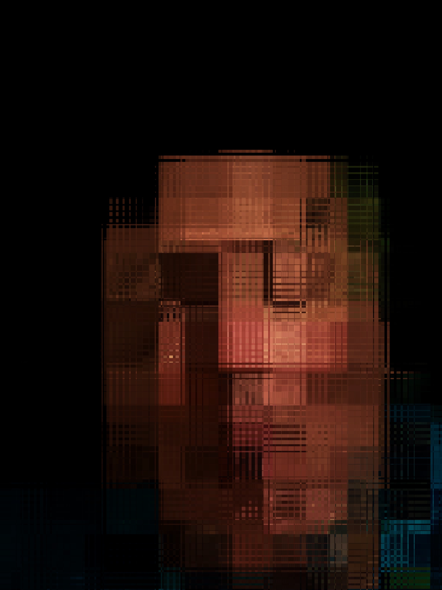

About

Earth’s crammed with heaven, And every common bush afire with God, But only he who sees takes off his shoes; The rest sit round and pluck blackberries. ― Elizabeth Barrett Browning
As an ageing noetic wanderer, the camera provides the catalyst for not just exploring the world but also finding a deeper communion with life in all its forms and greater insights about the creators of what we have before us.